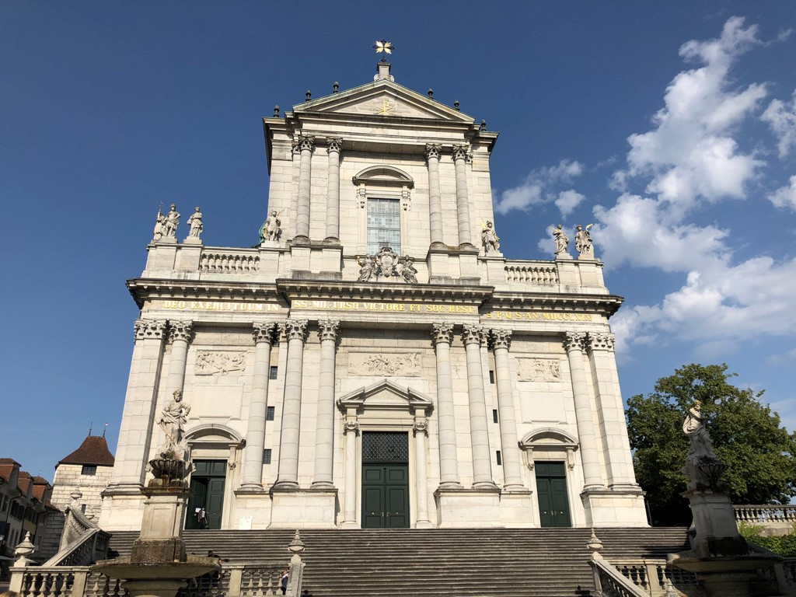
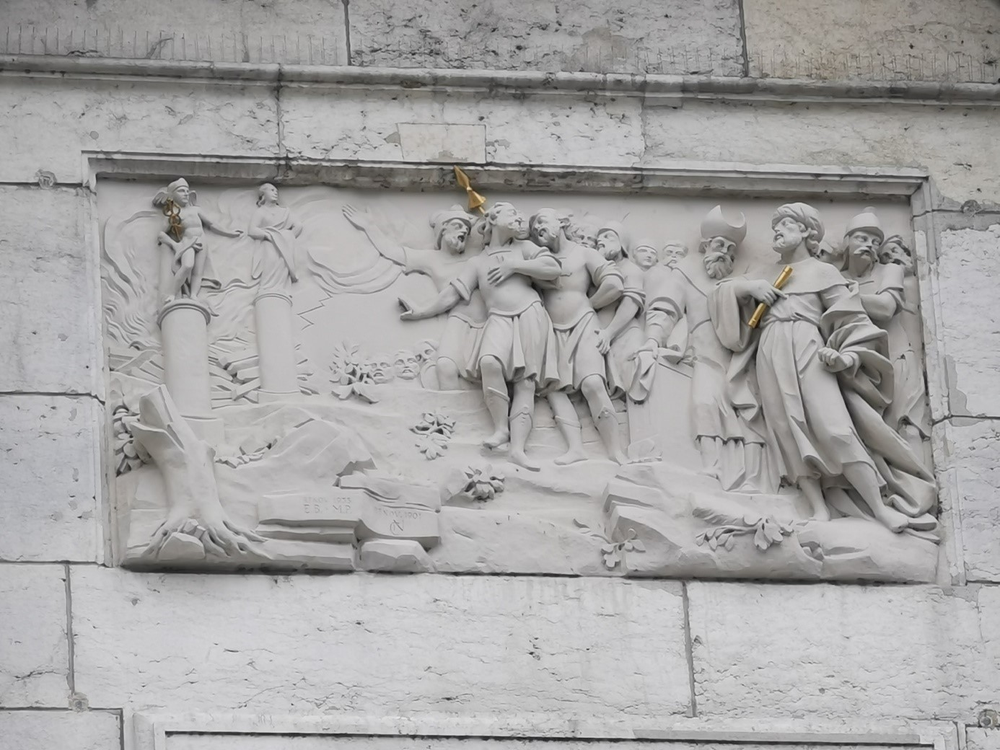
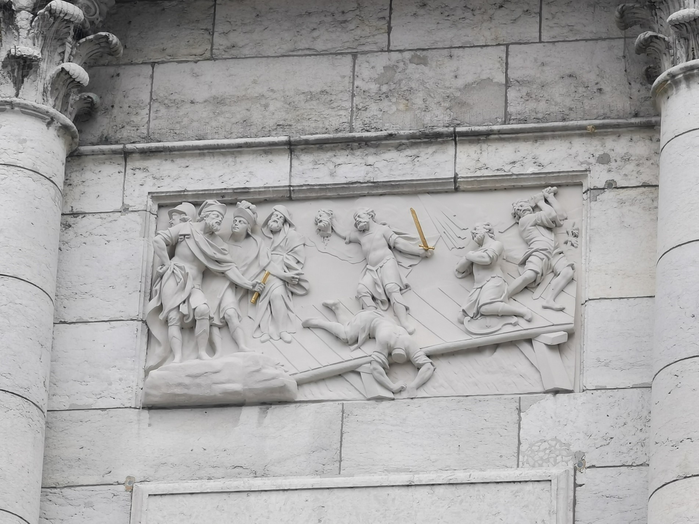

Wer schon einmal in Solothurn war, wird sie kennen – die St. Ursen-Kathedrale. Nicht zuletzt, da sie dank imposanten 66 Metern Gesamthöhe und ihrem strahlenden, hellen «Solothurner Marmor» (=Kalkstein) die Silhouette der prächtigen Barockstadt augenscheinlich prägt. Da Solothurn die Zahl Elf fast magisch innewohnt…
…führen auch drei Mal elf Treppenstufen zur Kathedrale
…befinden sich elf Altäre im Innern
…misst der Turm sechs Mal elf Meter und…
…ist mit elf Glocken bestückt.
Frontseitig bietet die Kathedrale allerhand Eindrücke. Als Erstes fällt wohl die goldene Inschrift auf: DEO EXERCITUUM IN SS. MIL. URSO VICTORE ET SOC. REST. S.P.Q.S AN. MDCCLXIX, zu Deutsch: Für den Gott der Heerscharen in den heiligen Legionären Urs, Viktor und Gefährten wiedererbaut durch den Rat und das Volk von Solothurn im Jahre 1769. Oberhalb der Inschrift, auf der Brüstung des Balkons, überblicken mehrere Statuen die Stadt. Die rechte Figur in der Mitte, stellt Urs dar – die linke in der Mitte, Viktor. Unterhalb der goldenen Inschrift sind drei Reliefs zu erkennen. In der Mitte ist die Schlüsselübergabe des Erlösers, Jesus Christus, an Petrus. Mit der Betrachtung der beiden äusseren Reliefs, wird bereits die Geschichte berührt, die sich um die Stadt Solothurn und insbesondere um die Kathedrale ranken.
Die St. Ursen-Kathedrale. (Bild: Adriana Basso Schaub)
Das rechte Relief – Die Verweigerung der Götzenanbetung
Gemäss Eucherius, dem Erzbischof von Lyon (um 380–450 n. Chr.), dienten unter dem Despoten, Kaiser Maximian (284–305) rund 6'600 Soldaten aus der Thebais in Ägypten – die sogenannte Thebäische Legion. Zahlreiche Eigenschaften zeichneten diese Krieger aus: unter anderem ihre Tapferkeit, ihr Kriegsgeschick und ihre Treue zum Feldherrn und dem christlichen Gott. Letzteres wurde ihnen dabei allerdings zum Verhängnis. Das rechte Relief zeigt exemplarisch die Haltung der Thebäischen Legion, diejenige der abgebildeten Soldaten – inklusive Urs und Viktor – gegenüber der Aufforderung des Feldherrn zur Verehrung der Götzenbilder. Die Soldaten wenden sich ab, verweigern die Ausführung des Befehls und stellen die Treue zu ihrem Gott über die Treue zu ihrem Feldherrn. Laut Eucherius erzürnte die Botschaft über die Befehlsverweigerung Maximian derart, dass er in Acaunum (heutiges St. Maurice im Wallis) gleich zwei Dezimierungen anordnete. Da auch diese die Soldaten nicht umstimmen konnten, liess er sie von seinen Soldaten umzingeln und niedermetzeln, was die Thebäer geschehen liessen.
Es gibt einige faktische Ungereimtheiten über den gesamten Hergang. Viktor ist teilweise Bestandteil der Legion, teilweise aber auch ein Veteran, der zufällig auf Feiernde nach der Abschlachtung der Thebäer trifft. Da er sich weigerte, mitzufeiern und sich als Christ zu erkennen gab, fand er bei der Feier den Tod. Dem Legionär Viktor jedenfalls, gelang zusammen mit Urs die Flucht. In Solothurn wurden sie von den Römern wieder aufgegriffen.
Relief rechts: Verwehrung der Götzenanbetung. (Bild: Joël Meier)
Das linke Relief – Die Enthauptungen
Nach ihrer Festnahme in Solothurn wurden Urs und Viktor sogleich der Prozess gemacht. Die Szenerie ist auf dem linken Relief erkennbar. Auf der damaligen Brücke zwischen der heutigen Wengibrücke und der Schienenbrücke für den Bahnverkehr, wurden Urs und Viktor durch das Schwert enthauptet und erlangten so den Status als Märtyrer, die für den Glauben gestorben waren. Gemäss der Sage wurden die Köpfe der Märtyrer in die Aare geworfen. Die vermeintlich leblosen Körper kullerten von der Brücke in den Fluss und eilten den Köpfen hinterher, bis sie diese zu fassen kriegten. Mit ihren Häuptern in den Händen, schwammen sie die Aare hinunter und stiegen dort aus dem Fluss, wo sie begraben werden wollten. Dieser Ort befindet sich ein wenig unterhalb der St. Ursen-Kathedrale, bei der St. Peters-Kapelle. Beide Kapellen liegen ausserhalb des ursprünglich römischen Castrums, da die Toten damals ausserhalb der Stadt begraben wurden. Heute sind sowohl die St. Peters- als auch die St. Ursen-Kathedrale in der Stadt integriert. In der St. Peters-Kapelle befand sich wahrscheinlich das Grab Viktors, bis dessen Gebeine um 500 n. Chr. nach Genf überführt wurden. In der St. Ursen-Kathedrale soll im Jahre 1519 der Sarg des Urs gefunden worden sein. Da diese Angaben den Bedürfnissen der christlichen Solothurner entsprachen, sind sie anzuzweifeln. Es überschneiden sich hier zwei Ebenen: die theologisch-passionierte überlagert in den Erzählungen die historisch-faktische, wird unscharf und sie verschwimmen zur Legende. Sicher ist jedoch, dass in der St. Ursen-Kathedrale Reliquien der – oder zumindest: als diejenigen der – Stadtheiligen verehrt wurden.
Relief links: Köpfungsszene. (Bild: Joël Meier)
Bedeutung des Ortes
Genau diese Verehrung der Stadtheiligen Märtyrer ist es, was diesen Ort theologisch bedeutsam werden liess und ihn für manche noch heute macht. Die Heiligen erfüllten und erfüllen noch immer ein theologisches Bedürfnis nach Verehrung. Sie gelten als Orientierungspunkt des Glaubens, als Richtungsweiser für ein vorbildliches, christliches Dasein. Die Märtyrer, wie es Urs und Viktor waren, vermitteln dabei wichtige Werte: Unter Gefahr des eigenen Lebens stellten sie sich gegen irdische Befehle, ihren Gott zu leugnen und die Christenverfolgung zu unterstützen. Sie blieben ihrem Glauben und ihren Werten treu, bis in den Tod. Ihr Mut und ihre Passion sollen noch heute erinnert werden, so wie Urs und Viktor noch heute in Stein von der Brüstung der eindrücklichen St. Ursen-Kathedrale ganz Solothurn überblicken.
Joël Meier ist Geschichtsstudent im Bachelor an der Universität Bern.
Zur Vertiefung:
- Haefliger, Eduard: «Urs und Viktor und die thebäische Legion», in: Jahrbuch für solothurnische Geschichte 29 (1956) 215–221.
- Näf, Beat: Mauritius – der heilige Soldat. Geschichte einer Legende, Zürich 2017.